Wounds are the commonest surgical problem on cattle farms — fence cuts, horn injuries, dog bites and accidents with machinery. How a wound is handled in the first hours decides whether it heals cleanly in two weeks or turns into a long, expensive infection.
This guide covers the complete system: wound assessment, cleaning and debridement, suture materials and patterns, bandaging, healing, complications and prevention — with the practical field detail a veterinarian and a farmer both need.
Wound Management in Cattle — Step by Step
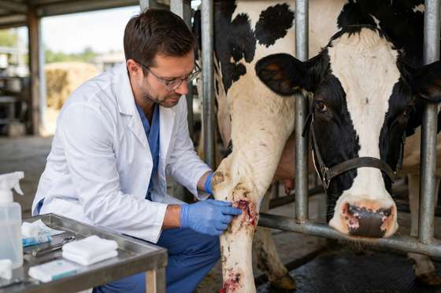
Step 1 — assess the wound before you touch it
Every wound, from a small fence cut to a deep laceration, follows the same order: restrain, assess, clean, decide, close or dress, and monitor. Rushing to stitch a dirty wound is the most common mistake — it traps infection inside.
1
Restrain the animal safely(Use a crush or chute; a calm, still cow protects both the animal and the veterinarian)
2
Assess the wound(Check the depth, size, age, bleeding and nearby structures — joints, tendons, udder or eye)
3
Control bleeding(Apply clean pressure with gauze; most wounds stop bleeding within a few minutes)
4
Clip and clean the surrounding skin(Clip hair around the wound and wash the skin with antiseptic solution)
5
Flush the wound(Irrigate with large volumes of clean water or sterile saline to remove dirt and bacteria)
6
Debride dead tissue(Carefully trim away dead, crushed or contaminated tissue until healthy bleeding tissue shows)
7
Decide: close or leave open(Clean fresh wounds under 6–8 hours old can be sutured; old or infected wounds heal better open)
8
Suture or bandage(Close in layers if needed, then protect with a clean dressing or bandage)
9
Give aftercare and record it(Tetanus protection, pain relief and antibiotics as advised by the veterinarian; note the date and treatment)
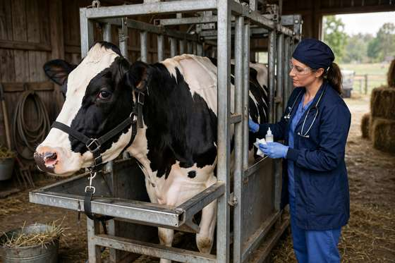
Restrain first — safety for vet and cow
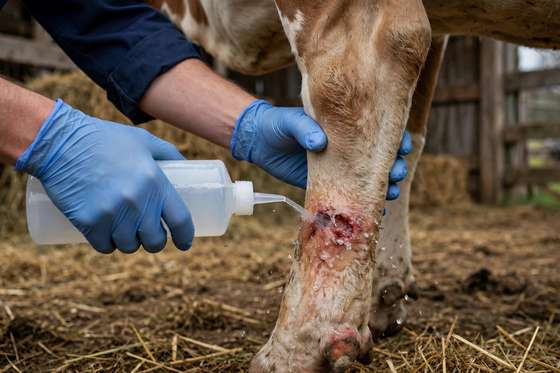
Flush with plenty of clean saline
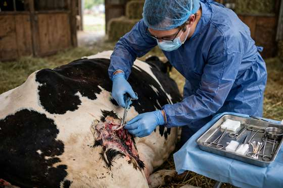
Debride dead tissue before closing
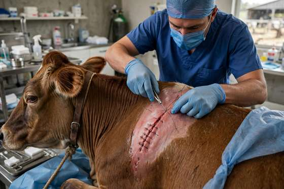
Close only a clean, fresh wound
Suture Materials and Patterns
Choosing the right suture material and pattern decides how well a wound holds. Deep layers need absorbable sutures that dissolve inside the body; skin needs strong non-absorbable sutures that are removed later.
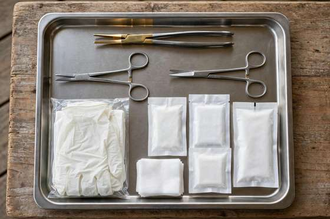
A clean suture kit — needle holder, forceps, scissors, sutures
1
Absorbable sutures(Used for muscle and deep tissue; dissolve on their own — no removal needed)
2
Non-absorbable sutures(Used for skin; strong and long-lasting, removed after 10–14 days)
3
Simple interrupted pattern(Separate stitches, each tied alone — the safest pattern for most cattle wounds)
4
Simple continuous pattern(One running thread — fast, but one break can open the whole wound)
5
Horizontal mattress pattern(Wide stitches that spread tension — best for deep or tight wounds)
6
Suture size(Thicker suture for thick skin and high-tension areas; finer suture for the face and teats)
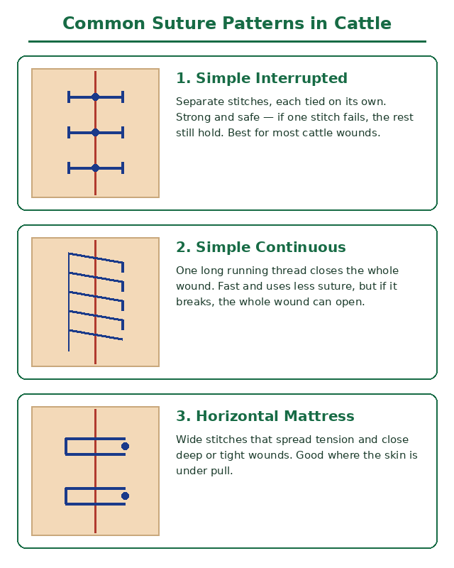
Three suture patterns — interrupted, continuous and mattress
Bandaging and Wound Healing
A good bandage protects the wound from dirt, flies and the animal itself — but a bandage that is too tight cuts off blood supply and can damage a leg. Check bandaged legs daily for swelling above or below the bandage.
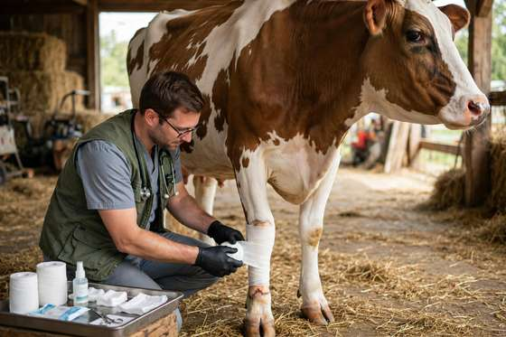
Bandage firmly, never tightly
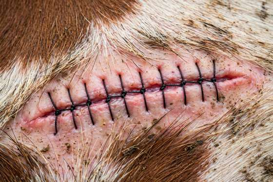
Healthy healing — clean pink tissue
1
Clean the wound before every dressing change(Flush gently and apply fresh antiseptic as advised by the veterinarian)
2
Use padding under the bandage(Cotton padding spreads pressure and absorbs discharge)
3
Change dressings regularly(Daily for infected wounds, every 2–3 days for clean healing wounds)
4
Watch the healing stages(Inflammation for 2–3 days, then pink granulation tissue, then new skin from the edges)
5
Remove skin sutures on time(Usually after 10–14 days; leaving them too long causes infection and scarring)
Complications — Signs to Watch
Most wounds heal well, but infection, swelling and fly strike can turn a small wound into a serious problem. Check every wound at least once a day in the first week.
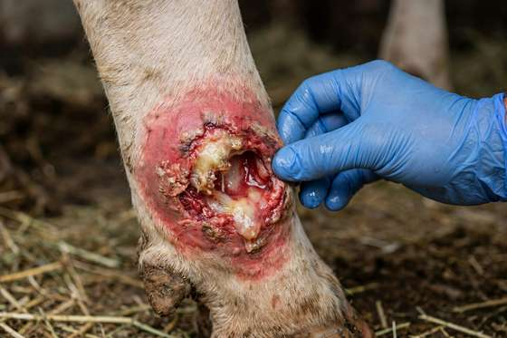
Infected wound — swelling, redness and discharge
1
Infection(Increasing swelling, heat, pain, redness or pus discharge — needs veterinary treatment)
2
Wound breakdown (dehiscence)(Stitches pulling through or the wound reopening, often from tension or infection)
3
Swelling below the bandage(A sign the bandage is too tight — loosen or remove it at once)
4
Fly strike and maggots(Flies lay eggs in open wounds in warm weather; protect wounds and check daily)
5
Tetanus(Deep puncture wounds carry tetanus risk — tetanus protection is essential after wounding)
6
Proud flesh (excess granulation)(Overgrown pink tissue that stops the skin closing — the veterinarian trims it)
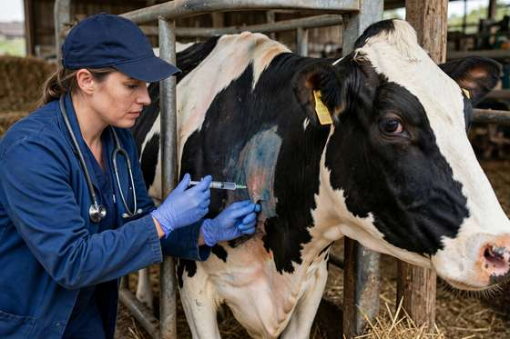
Tetanus protection after wounding
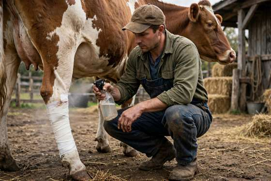
Protect wounds from flies
Prevention and Farm First Aid
Most cattle wounds are preventable. Safe fences, clean yards and a stocked first-aid box save far more money than any treatment.
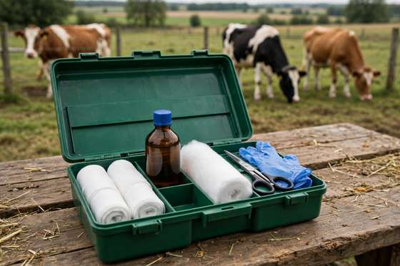
Keep a first-aid box ready on every farm
Important: All surgical procedures must be performed by a qualified veterinarian under proper anaesthesia and aseptic conditions. Never attempt surgery on your own animals without veterinary training.
⚠ Important Tips:
Repair broken fences, nails, wire and sharp edges — the commonest causes of wounds.
Keep a first-aid box with bandages, antiseptic, cotton, scissors and gloves.
Clean small wounds at once; call the veterinarian for deep, bleeding or joint wounds.
Never apply engine oil, turpentine or home chemicals to a wound.
Record every wound and treatment — dates, medicines and healing progress.
Isolate a badly wounded animal in a clean, dry pen until it heals.
Frequently Asked Questions
What is the first thing to do when a cow gets a wound?
Restrain the animal safely, then assess the wound: its size, depth, bleeding and location. Control bleeding with clean pressure, keep the wound clean, and call the veterinarian for any deep, heavily bleeding or joint wound. Do not stitch a wound yourself unless you are trained.
How should a wound be cleaned before suturing?
Clip the hair around the wound, wash the surrounding skin with antiseptic, then flush the wound itself with large volumes of clean water or sterile saline. Remove all dirt and foreign material, and trim away dead tissue. A wound must be clean before it is closed — closing a dirty wound traps infection inside.
Which suture pattern is best for cattle wounds?
The simple interrupted pattern is best for most cattle wounds because each stitch is tied separately — if one fails, the rest still hold. A simple continuous pattern is faster but can open fully if the thread breaks. Horizontal mattress stitches are used for deep or high-tension wounds.
How long do stitches stay in cattle skin?
Skin sutures are usually removed after 10 to 14 days, once the wound edges are firmly joined. Sutures left too long cause infection, scarring and irritation. Absorbable sutures used in deep tissue dissolve on their own and are not removed.
What are the signs of wound infection in cattle?
Increasing swelling, heat, pain and redness around the wound, pus or bad-smelling discharge, fever, loss of appetite and a wound that opens again. Any of these signs means the animal needs veterinary examination and treatment — do not wait for it to improve on its own.
Can I treat my cow's wound at home?
Small, clean, shallow wounds can be cleaned and dressed at home with clean water, antiseptic and a bandage. Deep wounds, wounds that bleed heavily, wounds near joints, eyes or the udder, and any wound with swelling or pus need a veterinarian.
Why does my cow's wound keep opening again?
The commonest reasons are infection, too much tension on the stitches, the animal licking or rubbing the wound, and movement near a joint. A veterinarian can re-clean the wound, relieve tension, choose a stronger suture pattern and protect it with a proper bandage.
گائے کے زخم کا علاج کیسے کریں اور ٹانکے کب لگوانے چاہئیں؟
پہلے گائے کو محفوظ طریقے سے باندھیں، زخم کو صاف پانی یا نمکین پانی سے اچھی طرح دھوئیں اور گندگی نکالیں۔ صرف صاف اور تازہ زخم پر ٹانکے لگوائیں — گندا یا پرانا زخم ٹانکوں سے بند کرنے سے انفیکشن اندر رہ جاتا ہے۔ گہرا زخم، زیادہ خون بہنا یا سوجن ہو تو فوراً ڈاکٹر کو بلائیں۔
Key Takeaway
Good wound management is mostly good basics: restrain safely, assess honestly, clean thoroughly, close only a clean wound, and watch it heal. Most wound failures come from dirty closure, missed foreign bodies or no follow-up — not from a lack of expensive medicine.